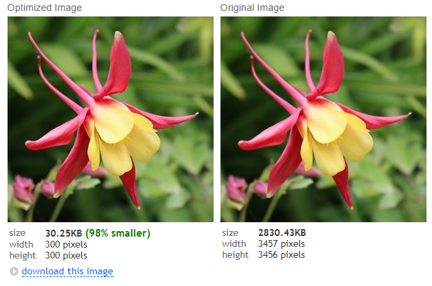

Blogging is just another way of writing a journal - albeit in the public eye. This one will track my journey to create a website for learning powershell and scripting when I don't really know much about web apps....
Today I need to learn how to add images to my web pages. In that process, I realized that I need a way to track what I did without creating formal "how to" pages. Hence the Blog was conceived.
Some basics that I was oblivious to were things like the size of images. I like photos, but have never really considered what is done to prepare an image for the web. So, at a minimal level, I needed to resize my image (a photo I took) for web resolution. There are lots of ways to do it, Photoshop is the most common one, but I needed to do one or two images. so, I searched the internet for a free tool that would do the job. That's where I found Web Resizer - www.webresizer.com/resizer/
So I've now resized my image - it was 2800 kb and the new size is 37 kb. The number of pixels has been significantly reduced. Here is a screenshot of the websizer window.
Here is my image. Let's try wrapping text around an image?